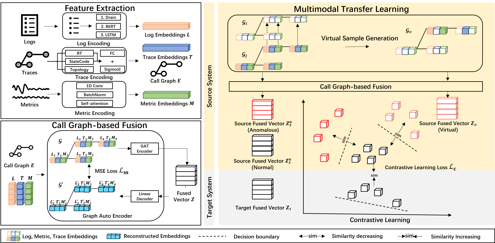
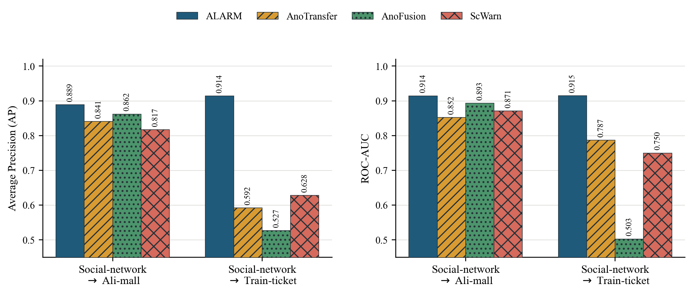
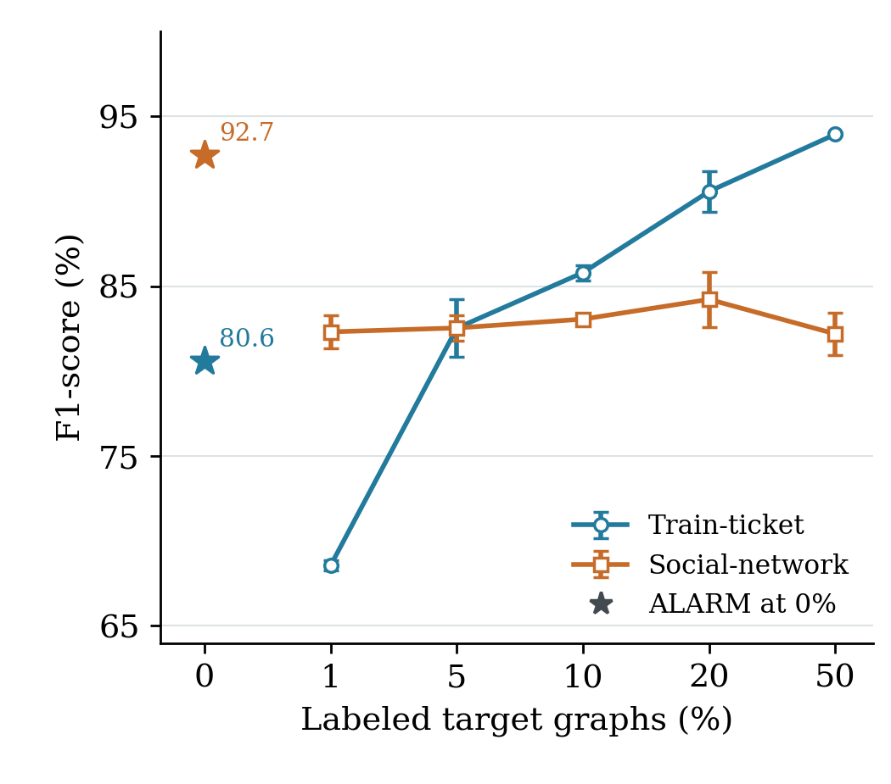
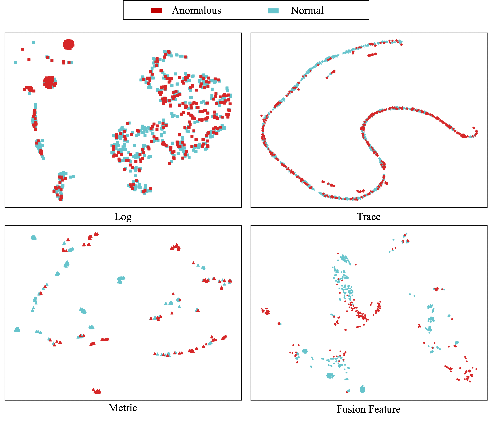
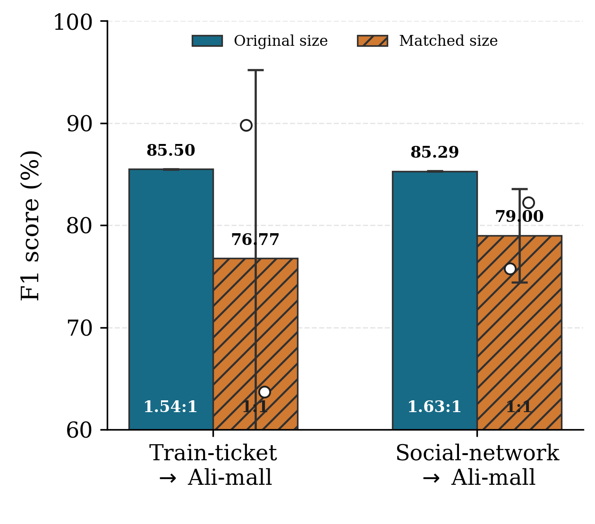
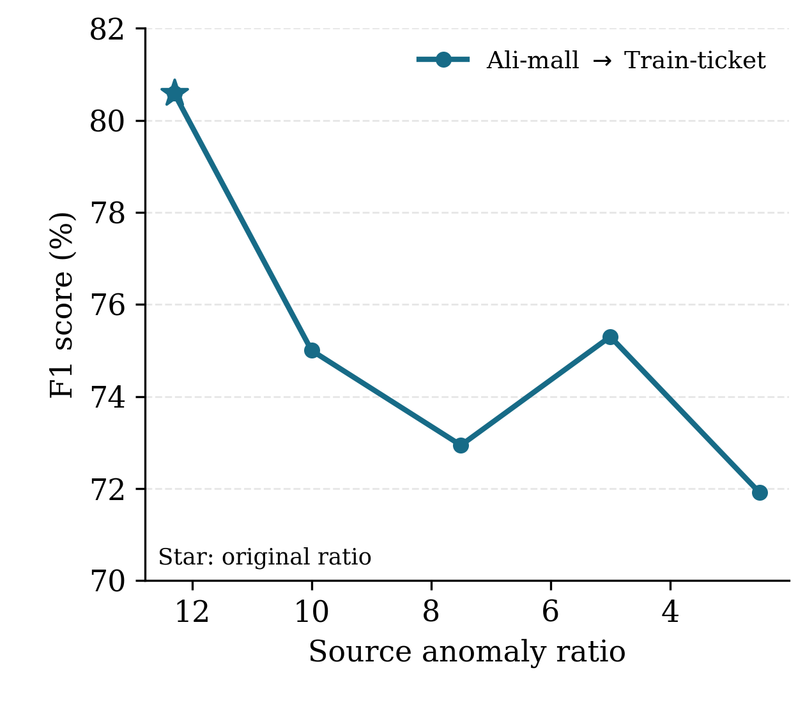
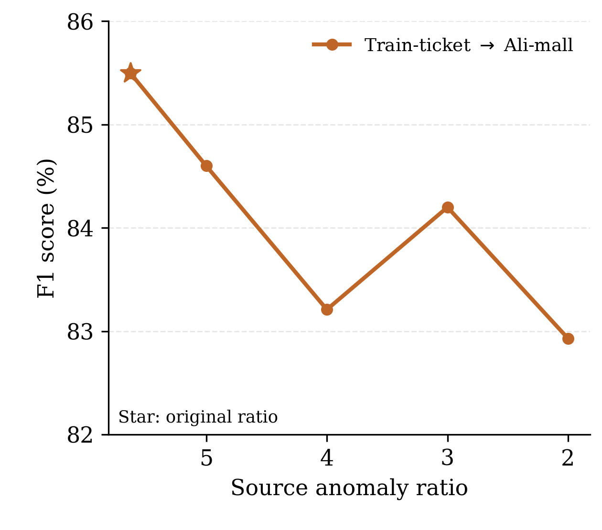
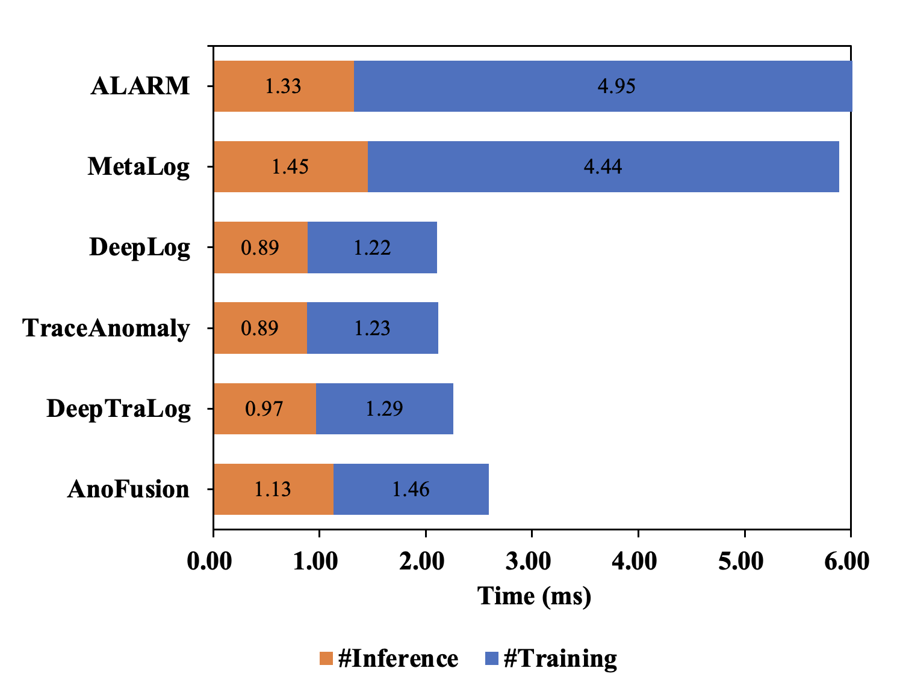
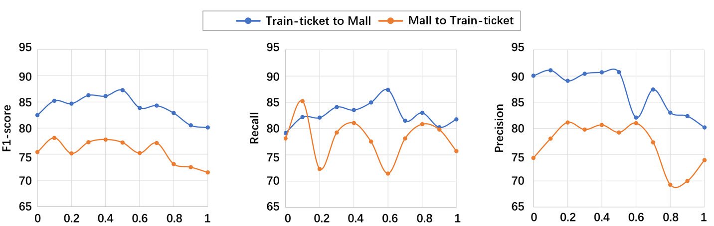

Extract transferable features
Encode log semantics, metric patterns, and trace response times and status codes into feature embeddings.
Modality-specific encodersMicroservice reliability / Research project
ALARM: A Cross-system Anomaly Detection Approach for Microservice Systems Using Multimodal Transfer Learning
Transfer anomaly knowledge from a mature system to a new one. Bring traces, logs, and metrics together through the structure of a service request.
Manuscript under review · Code release in preparation
01 / Motivation
Microservices produce heterogeneous telemetry, while labeled anomalies are often scarce. Mature systems accumulate valuable anomaly knowledge, but transferring that knowledge requires bridging differences in both modalities and systems.
ALARM studies this problem through multimodal transfer learning. The method combines request-level graph fusion with contrastive learning and virtual sample generation to address the modal gap and domain gap.
02 / Method
The call graph connects observations to the service request that generated them.
Encode log semantics, metric patterns, and trace response times and status codes into feature embeddings.
Modality-specific encodersAssociate observations with service nodes. A graph attention encoder captures invocation relationships while reconstruction preserves modal information.
Call graph-based fusionThe proposed method combines contrastive learning and virtual sample generation to connect cross-modal and cross-domain learning.
Multimodal transfer learning
03 / Evaluation
The manuscript evaluates all six directed transfer pairs among three microservice systems.
Railway ticketing
Social networking
E-commerce
Comparison with unsupervised and cross-system anomaly detectors, with additional AP and ROC-AUC analysis.
Ablations of fusion, contrastive learning, and virtual sample generation, including a time-window fusion comparison.
Training and inference costs, parameter sensitivity, and controls for dataset size and source anomaly ratio.
Reported results
F1 scores (%) from the manuscript's overall-results table. Higher is better. Reported central values are shown; uncertainty terms are omitted for readability. ALARM precision and recall are also included below.
On small screens, scroll horizontally to view all directions.
| Method / variant | Train-ticket → Ali-mall | Social-network → Ali-mall | Ali-mall → Train-ticket | Ali-mall → Social-network | Train-ticket → Social-network | Social-network → Train-ticket |
|---|---|---|---|---|---|---|
| AnoFusion | 77.54 | 77.54 | 64.90 | 76.25 | 76.25 | 64.90 |
| ScWarn | 73.99 | 73.99 | 65.70 | 75.38 | 75.38 | 65.70 |
| DeepTraLog | 68.70 | 68.70 | 62.44 | 73.24 | 73.24 | 62.44 |
| TraceAnomaly | 68.70 | 68.70 | 61.00 | 72.07 | 72.07 | 61.00 |
| DeepLog | 61.14 | 61.14 | 56.90 | 69.77 | 69.77 | 56.90 |
| AnoTransfer | 72.75 | 81.96 | 67.37 | 87.24 | 86.80 | 73.02 |
| MetaLog | 52.00 | 53.85 | 58.63 | 81.47 | 78.30 | 54.82 |
| ALARM | 85.50 | 85.29 | 80.59 | 92.70 | 90.88 | 78.14 |
| ALARM precision | 89.63 | 78.30 | 86.36 | 87.38 | 84.03 | 77.61 |
| ALARM recall | 82.53 | 94.06 | 76.34 | 98.76 | 98.60 | 80.45 |
ALARM has the highest reported F1 in all six directions. AnoFusion, ScWarn, DeepTraLog, TraceAnomaly, and DeepLog do not use source-system training data; their scores repeat for the same target.
F1 changes in percentage points relative to complete ALARM. Negative values indicate a decrease; positive values indicate improvement.
| Method / variant | Train-ticket → Ali-mall | Social-network → Ali-mall | Ali-mall → Train-ticket | Ali-mall → Social-network | Train-ticket → Social-network | Social-network → Train-ticket |
|---|---|---|---|---|---|---|
| Without CL | -9.95 | -9.64 | -10.79 | -5.51 | -4.57 | -6.64 |
| Without VSG | -3.04 | -2.13 | -5.18 | -2.20 | -6.15 | -1.03 |
| Without CGF | -6.43 | -12.76 | -13.42 | -16.09 | -0.63 | -4.14 |
| Coupled VSG | +1.49 | +0.79 | -6.06 | -1.65 | +0.25 | -5.49 |
| GCN | -4.34 | -8.97 | -0.39 | -16.19 | -13.22 | -11.63 |
| Time-window fusion | -0.71 | -13.65 | -13.15 | -22.09 | -13.00 | -11.86 |
CL: contrastive learning. VSG: virtual sample generation. CGF: call graph-based fusion. GCN retains the call graph but replaces attention-based aggregation; time-window fusion replaces call-graph edges with fully connected within-window edges.
AP and ROC-AUC comparison with AnoTransfer, AnoFusion, and ScWarn for two transfer directions. Higher is better.

Comparison with AnoTransfer, AnoFusion, and ScWarn for Social-network to Ali-mall and Train-ticket.
Full size ↗Experimental figures
Original figures used in the current manuscript. Select any figure to inspect it at full resolution.

MSTGAD curves vary the proportion of labeled target graphs; ALARM stars show transfer from Ali-mall.
Full size ↗
Feature distributions before and after fusion.
Full size ↗
Original and matched training-set sizes for transfers to Ali-mall.
Full size ↗
Sensitivity to the source anomaly ratio. The star marks the original ratio.
Full size ↗
Sensitivity to the source anomaly ratio. The star marks the original ratio.
Full size ↗
Training and inference efficiency as shown in the manuscript.
Full size ↗
Sensitivity to the virtual sample generation rate (α).
Full size ↗04 / Resources
Training code and configurations for cross-system anomaly detection. An anonymous code repository is available through the link below. Package validation is ongoing.
Anonymous code ↗The planned reproducibility package covers the two open-source benchmark datasets. Dataset packaging and access instructions are in preparation. Ali-mall data is not included.
Release in preparationThe manuscript is under review. A public paper link and final citation will be added when available.
Public link forthcomingManuscript information; not a published citation.
Chiming Duan et al. ALARM: A Cross-system Anomaly Detection Approach for Microservice Systems Using Multimodal Transfer Learning. Manuscript under review.